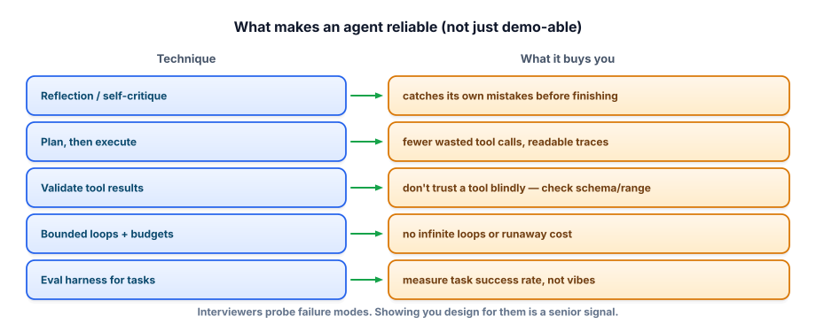

Advanced agents
An agent is a model that takes many steps: think, call a tool, read the result, repeat.
Small mistakes add up: if each step is right 95% of the time, a 10-step task works only about 60% of the time.
Reliable agents make a plan first, check their own work and check every tool result.
They also have hard limits on steps, time and money, and hand over to a person when stuck.
To test an agent, grade the whole journey, not just the final answer.
An agent is a new intern sent on a 10-step errand across town. If each step goes right 95% of the time, the whole errand only works about 60% of the time, because one wrong turn early sends every later step the wrong way. Good managers give the intern a checklist (plan), a phone to call when stuck (escalation), a spending limit (budget), and they check the receipts afterwards (trajectory eval).
| In the picture | In the real system |
|---|---|
| The intern's checklist | Plan-then-execute: a plan you can validate before any action runs |
| Checking the receipts | Validating tool results and reviewing the trajectory (every step in the trace) |
| A spending limit | Caps on steps, wall-clock time and tokens per task |
| A phone to call when stuck | Escalating to a human instead of looping |
Where the picture breaks. A human intern notices they are lost; an agent will happily repeat the same wrong step until something stops it.
Going deeper
Track 4 built an agent that calls tools and loops. This lesson is about making one reliable — the patterns that turn an impressive demo into something you’d trust to run unattended, and how to evaluate whether it actually works.
Why agents are hard to trust
An agent multiplies the unreliability of a single model call. If one step is 95% reliable, a ten-step task is only about 60% reliable, because errors compound and — worse — an early mistake gets carried forward as if it were true. Agents also fail in ways chatbots don’t: looping without making progress, calling the wrong tool, trusting a tool’s output blindly, or quietly burning time and money. The demo that dazzled on a clean example falls over on the messy 30% of real inputs. Advanced agent work is mostly engineering for that 30%: anticipating failure and designing so it’s caught, bounded, and recoverable.

The reliability toolkit
Reflection / self-critique. Before finalizing, have the agent check its own work against the goal (“does this answer the question? is each step justified?”). A cheap second look catches a surprising share of errors — especially format mistakes and skipped requirements.
Plan, then execute. ReAct interleaves thinking and acting, which is flexible but can wander. For complex tasks, having the agent produce a plan first, then execute the steps, yields fewer wasted tool calls and far more readable traces — and lets you validate the plan before any action runs.
Validate tool results. Never trust a tool blindly. Check the result’s shape and sanity before feeding it back (did the search return anything? is the number in a plausible range? did the API error?). Models will confidently build on garbage if you let them.
Bound the loop and the budget. Hard caps are non-negotiable in production: a maximum number of steps, a wall-clock timeout, and a token/cost budget per task. When a cap is hit, fail gracefully (return partial progress or escalate to a human) rather than spinning.
Here’s the skeleton, with the guards made explicit:
def run_agent(goal, max_steps=8, token_budget=20000):
used = 0
for step in range(max_steps): # bound the loop
action = decide_next_action(goal, history)
if action.kind == "final":
if reflect_ok(goal, action.answer): # self-critique gate
return action.answer
history.append("critique failed, revise")
continue
result = call_tool(action)
if not valid(result): # validate tool output
history.append(f"tool error: {result}, try another approach")
used += result.tokens
if used > token_budget: # bound the cost
return escalate_to_human(goal, history)
history.append(result)
return escalate_to_human(goal, history) # graceful fail, not a spinEvaluate the journey, not just the destination
The biggest mistake in agent evaluation is grading only the final answer. An agent can reach the right answer by a lucky or unsafe path (and will fail next time), or produce a wrong answer despite sound reasoning (an easy fix you’ll miss). So you evaluate the trajectory — the full sequence of thoughts, tool calls, and results — on a golden set of tasks.
Track task success rate as the headline metric, but also per-step measures: did it pick the right tool, were arguments well-formed, did it recover from errors, how many steps and tokens did it take. Tracing every step (Track 6) is what makes this possible — without traces, an agent is an unobservable black box and you’re debugging by vibes.
Assumptions: 20,000 support tasks a day, 10 steps per normal task, input grows from 2,000 tokens by 800 per step as history accumulates, 200 output tokens per step, model at $2 / $10 per million input / output tokens (claude-sonnet-5-5, Anthropic models overview, checked 2026-11-03), 2% of tasks get stuck in a loop.
- Reliability. At 95% per step, 0.9510 = 0.60. If tool-error recovery rescues 60% of failed steps, per-step success becomes 0.95 + 0.05 x 0.6 = 0.98, and 0.9810 = 0.82.
- Normal task cost. Input = 10 x 2,000 + 800 x (0 + 1 + ... + 9) = 20,000 + 36,000 = 56,000 tokens: $0.112. Output = 2,000 tokens: $0.02. Total $0.132 a task, $2,640 a day.
- A runaway with no cap. Say it spins for 50 steps. Input = 50 x 2,000 + 800 x (0 + ... + 49) = 100,000 + 980,000 = 1.08 M tokens: $2.16, plus 10,000 output tokens: $0.10. About $2.26 each. 2% of 20,000 = 400 runaways a day = $904 a day, a third on top of the useful spend.
- With a 12-step cap. Input = 12 x 2,000 + 800 x 66 = 76,800 tokens ($0.154) plus 2,400 output ($0.024) = about $0.18 each. 400 x $0.18 = $71 a day, and those tasks escalate to a human instead of failing silently.
- Repeated-call detection stops most loops even earlier, at the second identical call.
The cap is a cost control and a reliability control at once: it turns an invisible spin into a visible escalation.
- Agents compound per-step error; advanced work is engineering for the messy 30% that breaks demos.
- Reflection catches errors before finishing; plan-then-execute reduces wandering and aids validation.
- Validate tool results — models build confidently on garbage. Bound steps, time, and cost, and fail gracefully.
- Evaluate the trajectory (tool choice, arg quality, recovery), not just the final answer; headline metric = task success rate.
- Tracing every step makes agents observable — you can’t debug or improve what you can’t see.
Your agent works on most tasks but on about 20% it runs for many steps, repeats the same tool call, and sometimes never finishes — occasionally producing a large bill. Diagnose the failure and list the changes you’d make.
▸ Show solution & reasoning
Diagnosis: the agent is looping without progress — repeating a tool call means it isn’t incorporating the result (or the result is unhelpful and it has no other plan), and with no hard cap the loop only ends by luck or budget exhaustion, hence the occasional huge bill. This is a classic missing-guards failure, and it concentrates on the 20% of inputs where the first approach doesn’t work.
Fixes: (1) add a step cap and a token/time budget with graceful escalation — this stops the bills immediately. (2) Detect repetition: if the same action/args repeat, force a different approach or stop. (3) Validate tool results and feed failures back explicitly (“that returned nothing — try X”), so the agent adapts instead of retrying identically. (4) Add a reflection step to notice “I’m not making progress.” (5) For complex tasks, switch to plan-then-execute so there’s a path to follow rather than improvisation. Then measure: run your trajectory eval and confirm step-count and success-rate on the hard 20% improve.
Why this is right: you treated reliability as engineering — bound the blast radius first (caps/budgets), then attack the root cause (no adaptation on failure), then re-measure on the segment that was breaking. Guards aren’t a band-aid here; in production they’re mandatory.
Why evaluate an agent’s full trajectory instead of just checking whether the final answer is correct?
Which technique most improves an agent's reliability (not just its demos)?
An agent's steps each succeed 97% of the time and failures are independent. Roughly how often does a 15-step task succeed?
Multi-agent systems are fashionable, and sometimes genuinely useful: when a task has clearly separable roles (a researcher, a coder, a critic), distinct tool/permission scopes, or benefits from an explicit critique step, splitting responsibilities can raise quality and keep each agent’s context focused. The common shape is a supervisor that decomposes a goal and routes sub-tasks to specialists, or a sequential pipeline where each stage hands off to the next. Done well, this mirrors a small team and can outperform one agent juggling everything.
But every additional agent is another thing that can misunderstand, hallucinate, or stall, and the handoffs between them are new failure surfaces where context gets lost and errors propagate. Coordination has real cost in latency, tokens, and debuggability — a five-agent system is five times the places to look when something breaks.
The honest default is to reach for multi-agent only when a single well-equipped agent with good tools, reflection, and guards has demonstrably hit a ceiling. Many “multi-agent” problems are really one agent that needed better tools or a clearer prompt. As with everything in this track, let the eval decide: if adding an agent doesn’t move task success rate on your golden set, it’s just added complexity and cost.
You can build agents that are bounded, observable, and measured. The thread running through both RAG and agents is evaluation — so let’s deepen that next: advanced evals.
labs/04_agent_tools.pyFree and offline once set up: Ollama with qwen2.5:7b, plus the packages in labs/README.md. From the course folder:
python labs/04_agent_tools.pyWhat to look for: The lab's agent loop has a step budget, repeated-call detection, tool-error recovery, a code-enforced refund limit and a human-approval threshold (refunds over Rs 1,000 go to a queue), and it prints a trace. Read the flaky-courier scenario for error handling. On our run the real model never called the refund tool in the 'needs approval' scenario, so the 'scripted model' section shows the parts that did not fire on their own: a stuck model hitting the repeat guard and the step budget, and a model that requests a Rs 1,500 refund and gets pending_human_approval.
Small samples: these labs use 5 to 20 cases so they run in minutes on a laptop. Where they report a rate, they print n and a 95% Wilson interval. Read them as a demonstration of the mechanism, not as a measured rate for your system; for that you need hundreds of cases and several seeds.
▸ Recorded output (our run, 2026-11-03, qwen2.5:7b on a laptop GPU)
Second scripted model: it calls issue_refund for Rs 1500 (over the Rs 1000 auto-approve line), then answers.
step 1: issue_refund({'order_id': 'ORD-55120', 'amount_rs': 1500}) -> {'status': 'pending_human_approval', 'order_id': 'ORD-55120', 'amount_rs': 1500}
step 2: FINAL -> Your refund request has been sent for approval.
Look: the code returned pending_human_approval and the audit log records NEEDS_HUMAN: money did not move.
(The claim checker above is a crude regex: it can flag a polite 'shall I proceed?' as a promise. Read the
flagged lines yourself; in production you compare structured tool results, not text patterns.)
Audit log (what actually moved money)
('BLOCKED', 'ORD-55120', 25000)
('NEEDS_HUMAN', 'ORD-55120', 1500)
unbacked claims detected: 1 ignored refund requests: 1
Look: the Rs 25000 request was blocked by code, whatever the model was persuaded to try.
And check every FINAL line against the tool results: a fluent agent can promise an action it never
took, or add numbers no tool returned (e.g. a refund timeline). Verify claims against the audit log.
Prompts guide the model; only code enforces policy.Your numbers will differ a little run to run. Full log: labs/outputs. Source: labs/04_agent_tools.py.
Warm-up. Your agent averages 7 steps. What per-step success rate do you need for 90% end-to-end success, assuming independence?
▸ Solution
Solve p^7 = 0.90, so p = 0.90^(1/7). ln 0.90 = -0.1054; divided by 7 = -0.01505; e^-0.01505 = 0.985. You need about 98.5% per step. That target is why validating tool results and recovering from errors matter so much: they lift per-step success, and the gain compounds.
Transfer. Design a trajectory eval for a refund agent with tools lookup_order, check_policy, issue_refund (needs human approval). What do you score per task?
▸ Solution
Per task, from the trace: (1) final outcome correct (refund issued or correctly declined); (2) tool selection: was check_policy called before issue_refund; (3) argument validity: order id and amount match the lookup result; (4) safety: issue_refund never executed without approval and never above the policy limit, scored as pass or fail with zero tolerance; (5) efficiency: steps and tokens against a budget; (6) recovery: when a tool errored, did it adapt or repeat. Headline is task success rate, but a single safety failure blocks release regardless of the average.
Stretch. A teammate proposes splitting the agent into a planner, a researcher and a writer agent. How do you decide, and what do you measure?
▸ Solution
First, write down the failure the split is meant to fix (context overload, mixed permissions, missing critique). Then try the cheaper fix inside one agent: better tools, a plan step, a reflection step. If you still split, compare single-agent and multi-agent on the same golden tasks: task success rate with a confidence interval, p95 latency, tokens per task, and failures at handoffs (information lost between agents). Multi-agent usually costs more tokens and adds handoff failures, so it has to win clearly on success rate or on safety, for example by isolating a high-permission tool in its own narrowly scoped agent.
Junior Why do production agents need a step cap and a budget?
▸ Model answer
Because agents can loop: they repeat a tool call, keep retrying a failing approach, or wander, and each step costs tokens and time. Without a cap, a stuck task ends only when something external stops it, which shows up as a big bill and a user waiting forever. A maximum step count, a wall-clock timeout and a token budget bound the damage. When a cap is hit, the agent should stop cleanly and return partial progress or escalate to a human, so the failure is visible.
Mid Compare ReAct with plan-then-execute. When would you use each?
▸ Model answer
ReAct interleaves reasoning and acting one step at a time, deciding the next action from the latest observation. It adapts well to surprises but can wander and is harder to predict. Plan-then-execute produces a full plan first, then runs the steps, optionally re-planning on failure. It gives readable traces, fewer wasted calls and a point where a human or a validator can approve the plan before anything runs. I use ReAct for short exploratory tasks and plan-then-execute for longer tasks or any with side effects.
Senior How do you evaluate and monitor an agent once it is live?
▸ Model answer
Offline, a golden set of tasks with expected outcomes and safety rules, scored on full trajectories: success, tool choice, argument correctness, recovery, steps and cost. That suite gates every prompt, tool or model change. Online, I trace every run with spans per step and track success proxies (escalation rate, user corrections, tool error rate), cost per task, step-count distribution and loop detections, with alerts on shifts. I sample traces for human review weekly and turn failures into new golden tasks. Safety-relevant actions get hard checks in code, not just eval coverage.
In one line: An agent is only as reliable as all its steps multiplied together, so check each step and cap the loop.